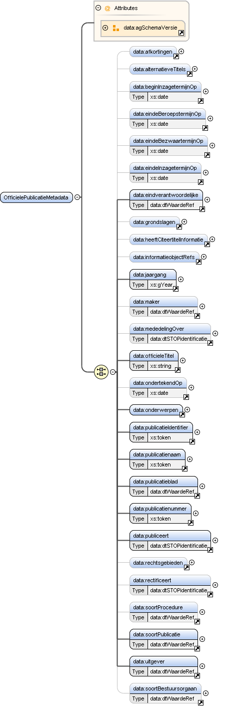

Element data:OfficielePublicatieMetadata
| Namespace | https://standaarden.overheid.nl/stop/imop/data/ | ||||||
| Definitie |
Module voor de set metadata die van toepassing is op een officiële publicatie. |
||||||
| Informatie |
De waarden van de metadata worden
Invullen tijdens publicatie
Overnemen uit
Afleiden uit Voorbeeld |
||||||
| Informatiemodel | Metadata officiële publicatie (entiteit) | ||||||
| Verwijzingen | data:BesluitMetadata, data:InformatieObjectMetadata, data:KennisgevingMetadata, data:OfficielePublicatieVersieMetadata, data:RegelingMetadata | ||||||
| Diagram |

|
||||||
| Eigenschappen |
|
||||||
| Kinderen | Element data:afkortingen, Element data:alternatieveTitels, Element data:beginInzagetermijnOp, Element data:eindeBeroepstermijnOp, Element data:eindeBezwaartermijnOp, Element data:eindeInzagetermijnOp, Element data:eindverantwoordelijke, Element data:grondslagen, Element data:heeftCiteertitelInformatie, Element data:informatieobjectRefs, Element data:jaargang, Element data:maker, Element data:mededelingOver, Element data:officieleTitel, Element data:ondertekendOp, Element data:onderwerpen, Element data:publicatieIdentifier, Element data:publicatieblad, Element data:publicatienaam, Element data:publicatienummer, Element data:publiceert, Element data:rechtsgebieden, Element data:rectificeert, Element data:soortBestuursorgaan, Element data:soortProcedure, Element data:soortPublicatie, Element data:uitgever | ||||||
| Attributen |
|
||||||
| Beperkingen |